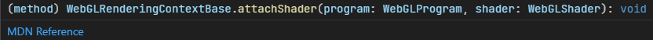

Hello again, everybody! Welcome to the blog post for my final project for CENG469! I know that HW3 post was more "ending"ish but this is really the last post from me for this course if there will not be any problem.
As an introduction: Şok şok şok, gerçek zamanlı ışın izleme, ayağınıza kadar geldi!
Well, my project was to create a real-time ray-tracer in WebGL. Unlike the other projects, this can directly accessed from my page, This link takes you there.
Creating a ray-tracer in GLSL has been one of my goals ever since I started computer graphics. The main reason, as I said in my presentation, was that shaders are, unlike more advanced technologies like Vulkan ray-tracers, extremely portable. OpenGL ES works on almost all devices that have enough computation power to handle real-time graphics. WebGL is pretty much OpenGL ES working on a web browser. This takes the portability even further so that compilation is no longer our concern (Google and Mozilla's engine engineers take care of that) yet we have a great deal of power since we can pretty much use the whole OpenGL ES. WebGL2, which I used for this project, is even better since it also supports many modern OpenGL features.
Using WebGL was very similar to using normal OpenGL in terms of experience. Actually, thanks to the better type system of the TypeScript, it was an even better one.
As you can see, there is a type called WebGLProgram and another one called WebGLShader. By comparison, here is the C/C++ version of the corresponding OpenGL function:
glAttachShaderNo info about the types except the names of the parameters!
Other than these nice additions, I just rendered a single square using two triangles. Similar to HW3, I used it as "glasses" of the camera. As I can access the interpolated vertex positions in the fragment shader, I was able to get the pixel's position in [-1,1] range. I emphasize the range since working on it was a bit better. Creating the ray was simple:
vec3 ray_position = vec3((vertex_position.xy)/2.0f + vec2(0.5f, 0.5f), mod(0.0f, 5.0f)/5.0f); vec2 near_size = vec2(camera.near_plane.y - camera.near_plane.x, camera.near_plane.w - camera.near_plane.z); vec2 ray_target = (((vertex_position.xy/2.0f)+0.5f) * near_size) + vec2(camera.near_plane.x, camera.near_plane.z); vec3 camera_right = cross(camera.gaze, camera.up); vec3 coord_vertical = ray_target.y*camera.up; vec3 coord_horizontal = ray_target.x*camera_right; vec3 ray_end = camera.position + (camera.gaze)*camera.near_distance + coord_vertical + coord_horizontal; vec3 ray_start = camera.position; vec3 ray_direction = normalize(ray_end - ray_start);
That mod part remained from an early test and is most probably optimized out. Even if not, a single modulo is probably much cheaper compared to the trace function that we will come later.
Note that ray_start = ray_end would make so that the objects between the focal-point and the image plane will not be visible (it pretty much starts the ray from the plane instead of the focal point). However, in my opinion, no cut looks much better. That line is commented out in the code, if you want, then just edit the file source/fragment.glsl and uncomment that line in the main function.
Second one looks more natural in my opinion.
As I said in my presentation, the main obstacle when I implement ray-tracing is that GLSL does not support recursion. To overcome this problem, I utilized a stack. First however, I want to give the recursive code I used to implement the loop.
void trace(Ray ray, vec3 amount, float eta) {
// START
recursion_depth += 1;
int material;
vec3 hit_point;
vec3 normal;
if(!get_hit_point(ray, &material, &hit_point, &normal)) {
return;
}
vec3 diffuse;
vec3 specular;
vec3 ambient;
shade(ray, material, hit_point, normal, &diffuse, &specular, &ambient);
color += (diffuse + specular + ambient)*amount;
if(recursion_depth == MAX_RECURSION_DEPTH) {
return;
}
vec3 reflected_ray_direction = reflect(ray.direction, normal);
vec3 refracted_ray_direction = refract(ray.direction, normal, eta/material_etas[material]);
trace(Ray(hit_point, reflected_ray_direction), amount * material_reflectiveness[material], eta);
// REFLECT
trace(Ray(hit_point + 2.0f*refracted_ray_direction*SHADOW_RAY_EPSILON), refracted_ray_direction, amount * material_refractness[material], material_etas[material]);
// REFRACT
return;
}
The GLSL code is pretty much based on this code. As you can see, it is more-or-less a simple ray-tracer. However, it is recursive.
Well, the comments are not arbirary. When we recurse, we need to create an activation record just like every other function call. This activation record holds the
Also, the function allocates every local/automatic variable on the stack. All of these combined creates the contents of the stack for a certain call. We need to simulate this by using an explicit stack.
struct CallStackEntry {
// Instruction "pointer"
int recurse_place;
// Arguments
vec3 ray_start;
vec3 ray_direction;
vec3 amount;
float eta;
// Local variables
int material;
vec3 hit_point;
vec3 normal;
vec3 reflected_ray_direction;
vec3 refracted_ray_direction;
};
This is a single entry for our stack. As you can see, every element has the same name as the local variables or the arguments in the original recursive function. The only exception is the recurse_place. As we don't have any return value (our function is void) we can just omit it. There are three #defines with the same names as the comments in the recursive code. They correspond to the places where the current call on the stack is entered.
START means that our function is called from the start, a normal call.REFLECT means that our function returned from the first trace call, i.e. the reflection trace.REFRACT is similar to REFLECT but instead for the second trace call.After considering these, the trace of the GLSL becomes pretty understandable.
void trace() {
for(int i = 0; i < (1 << (MAX_RECURSION_DEPTH+3)); i++) {
if(call_stack_position == 0) {
break;
}
switch(CUR.recurse_place) {
case START:
if(!get_hit_point(CUR.ray_start, CUR.ray_direction, CUR.material, CUR.hit_point, CUR.normal)) {
call_stack_position -= 1;
break;
}
vec3 diffuse = vec3(0.0f);
vec3 specular = vec3(0.0f);
vec3 ambient = vec3(0.0f);
shade(CUR.ray_start, CUR.ray_direction, CUR.material, CUR.hit_point, CUR.normal, diffuse, specular, ambient);
CUR.normal = normalize(CUR.normal);
CUR.ray_direction = normalize(CUR.ray_direction);
color.rgb += (diffuse + specular + ambient) * CUR.amount / 256.0f;
if(call_stack_position == MAX_RECURSION_DEPTH) {
call_stack_position -= 1;
break;
}
CUR.reflected_ray_direction = reflect(CUR.ray_direction, CUR.normal);
CUR.refracted_ray_direction = refract(CUR.ray_direction, CUR.normal, CUR.eta/material_refract[CUR.material]);
// color = vec4(CUR.eta/material_refract[CUR.material], 0.0f, 0.0f, 1.0f);
CUR.recurse_place = REFLECT;
NEXT.recurse_place = START;
NEXT.ray_start = CUR.hit_point;
NEXT.ray_direction = CUR.reflected_ray_direction;
NEXT.amount = CUR.amount * material_reflect[CUR.material];
NEXT.eta = CUR.eta;
call_stack_position += 1;
break;
case REFLECT:
CUR.recurse_place = REFRACT;
NEXT.recurse_place = START;
NEXT.ray_start = CUR.hit_point + 2.0f*CUR.refracted_ray_direction*SHADOW_RAY_EPSILON;
NEXT.ray_direction = CUR.refracted_ray_direction;
NEXT.amount = CUR.amount * material_refract_ratios[CUR.material];
NEXT.eta = material_refract[CUR.material];
call_stack_position += 1;
break;
case REFRACT:
call_stack_position -= 1;
break;
}
}
}
Assignments with NEXT are just giving arguments. CUR denotes the current stack entry. Actually, CUR is defined as the call_stack_position-1th element in the stack and NEXT is defined as the call_stack_positionth element. The call_stack_position starts at 1 since we first push the eye ray in the main function.
Other than that, almost all the other functions are pretty much the same as ones in CENG477 HW1, including triangle intersections etc.
Another problem arose when I tried the scene to be changable. Well, GLSL does not support dynamic arrays. To circumvent this, I recompile the shader every time a new scene is given. The sizes of the arrays are #defined as this:
#define LIGHT_COUNT $LIGHT_COUNT #define MATERIAL_COUNT $MATERIAL_COUNT #define VERTEX_COUNT $VERTEX_COUNT #define FACE_VERTEX_COUNT $FACE_VERTEX_COUNT #define SPHERE_COUNT $SPHERE_COUNT #define MAX_RECURSION_DEPTH $MAX_RECURSION_DEPTH #define SHADOW_RAY_EPSILON $SHADOW_RAY_EPSILON #define HAS_TRIANGLE $HAS_TRIANGLE #define HAS_SPHERE $HAS_SPHERE
Which can be found on the top of the source/fragment.glsl. In the JS, I just replace the ones starting with $ with the suitable values with this replace chain in the source/shader-program.ts:
fragmentShader = fragmentShader.replace(/\$LIGHT_COUNT/, (scene.lightPositions.length/3).toString())
.replace(/\$MATERIAL_COUNT/, scene.materials.phong.length.toString())
.replace(/\$VERTEX_COUNT/, (scene.vertexData.length/3).toString())
.replace(/\$SPHERE_COUNT/, (scene.sphereRadii.length === 0 ? 1 : scene.sphereRadii.length).toString())
.replace(/\$MAX_RECURSION_DEPTH/, scene.maxRecursionDepth.toString())
.replace(/\$SHADOW_RAY_EPSILON/, scene.shadowRayEpsilon.toString())
.replace(/\$HAS_TRIANGLE/, Number(scene.vertices.length !== 0).toString())
.replace(/\$HAS_SPHERE/, Number(scene.sphereRadii.length !== 0).toString())
.replace(/\$FACE_VERTEX_COUNT/, Number(scene.vertices.length === 0 ? 3 : scene.vertices.length).toString());
Note that some of them are checked against 0. The reason is that 0-sized arrays are forbidden, and some scenes do not have any meshes or any spheres in some cases. This creates a non-empty scene without a certain kind of object. These checks are to prevent this issue.
Handling keys was pretty similar to C++ HWs. However, instead of a set, I used a dictionary/object.
Note that many browsers/drivers do not support more vectors than a certain limit. You can check it here as the "Max fragment uniform vectors" in "Fragment Shader" part. For example, Firefox on my computer supports up to 1024, which is not enough for, for instance, monkey.xml (Suzanne example). You will get an alert/popup when an error like this occurs. Note that this may (but I am not sure) be circumvented by using float arrays instead of vec3 arrays but it would be a big hassle for me and it may also not work.
With this, here comes my final project! I have been very satisfied with the whole course, and this project really was a great push for me to create it since I pretty much lacked the motivation to do it. Thank you for reading this post.